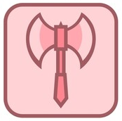
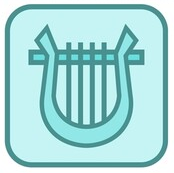
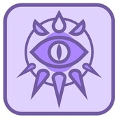
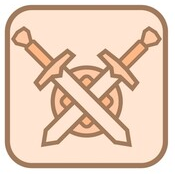
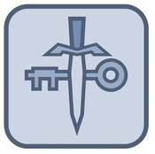
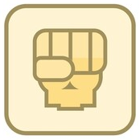
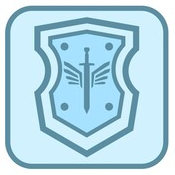

Classes de Personagens
-
Bárbaro
Um guerreiro feroz de origem primitiva que pode entrar em fúria na batalha
Habilidade Primária: Força e Constituição
-
Bardo
Um mágico inspirador cujo poder ecoa a música da criação
Habilidade Primária: Carisma e Destreza
-
Bruxo
Um manipulador de magia que ganhou seus poderes através de uma barganha com uma entidade
Habilidade Primária: Carisma e Sabedoria
-
Clérigo
Um campeão sacerdotal que exerce magia divina a serviço de um poder superior
Habilidade Primária: Sabedoria e Carisma
-
Druida
Um sacerdote da Antiga Fé, empunhando os poderes da natureza e adotando formas de animais
Habilidade Primária: Sabedoria e Inteligência
-
Feiticeiro
Um conjurador que extrai magia inerente de uma dádiva ou linhagem
Habilidade Primária: Carisma e Constituição
-
Guerreiro
Um mestre do combate marcial, habilidoso com uma variedade de armas e armaduras
Habilidade Primária: Força e Constituição
-
Ladino
Um canalha que usa furtividade e malandragem para superar obstáculos e inimigos
Habilidade Primária: Destreza e Inteligência
-
Mago
Um usuário de magia erudito capaz de manipular as estruturas da realidade
Habilidade Primária: Inteligência e Sabedoria
-
Monge
Um mestre das artes marciais, aproveitando o poder do corpo em busca da perfeição física e espiritual
Habilidade Primária: Destreza e Sabedoria
-
Paladino
Um guerreiro santo vinculado a um juramento sagrado
Habilidade Primária: Força e Carisma
-
Patrulheiro
Um guerreiro que combate ameaças nos limites da civilização
Habilidade Primária: Destreza e Força